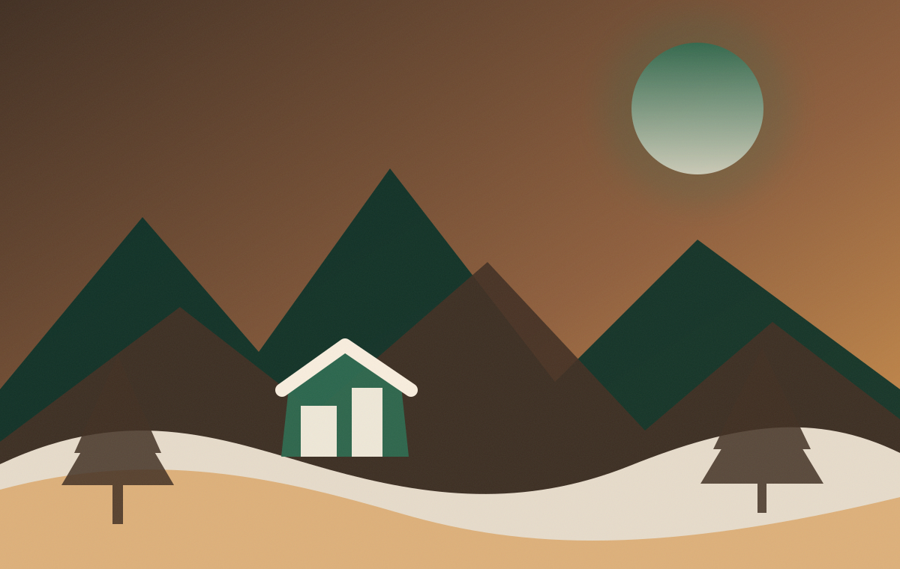
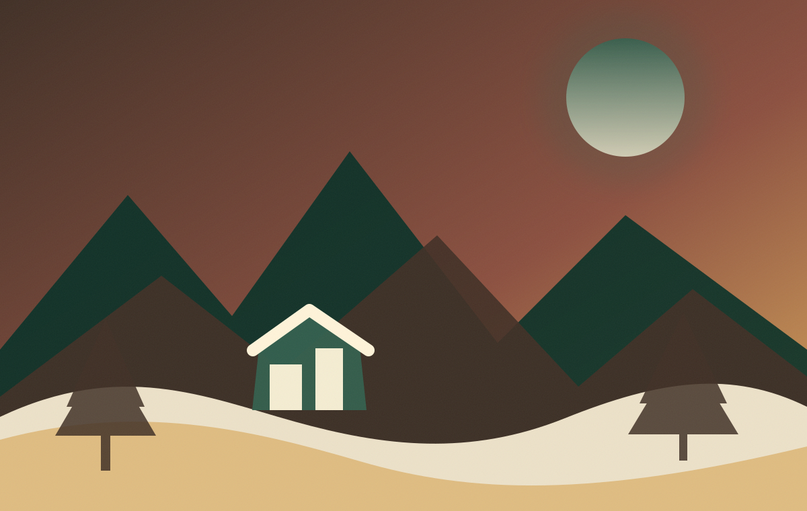

Tradisi
Ruang untuk menjelaskan tradisi dan nilai sosialnya.
Profil, sejarah, budaya, masyarakat, pertanian, produk lokal, serta struktur pengelola desa wisata.
Profil singkat perlu disusun dari sumber pemerintah desa dan narasumber lokal agar akurat.

Tempat untuk narasi profil desa, lokasi administratif, kondisi wilayah, dan potensi utama. Hindari menyalin informasi tanpa verifikasi.
Gunakan wawancara tokoh masyarakat, arsip desa, dan dokumen resmi sebagai sumber utama.
Kronologi asal-usul, perkembangan permukiman, mata pencaharian, dan peristiwa penting.

Perubahan layanan, organisasi pengelola, dampak wisata, dan arah pengembangan.
Dokumentasi budaya harus mendapat persetujuan dan tidak mengubah makna tradisi.
Ruang untuk menjelaskan tradisi dan nilai sosialnya.
Profil kelompok seni, jadwal latihan, dan pertunjukan.
Aktivitas harian dan pola kehidupan masyarakat.

Agenda, tata cara, dan etika bagi pengunjung.
Tampilkan komoditas, proses produksi, aktivitas wisata edukasi, dan kanal pembelian produk.
Komoditas utama dan musim panen.

Proses budidaya dan kegiatan pertanian harian.

Produk olahan dan usaha masyarakat.
Bagian ini memperjelas siapa yang bertanggung jawab atas informasi dan layanan.

| Peran | Tugas utama | Kontak |
|---|---|---|
| Ketua pengelola | Koordinasi dan kebijakan | — |
| Pusat informasi | Informasi wisatawan dan rujukan layanan | — |
| Operasional | Pendataan layanan dan pembaruan informasi | — |
| Media & dokumentasi | Konten, berita, agenda, dan arsip foto | — |